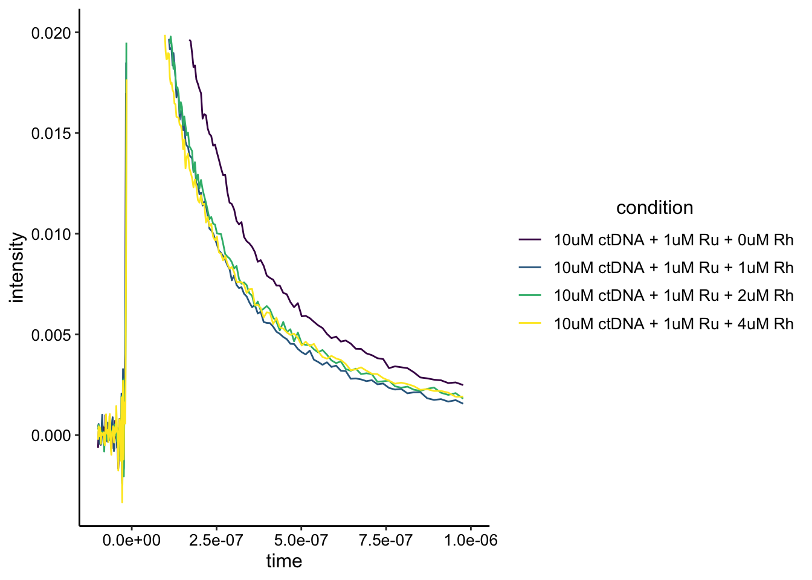
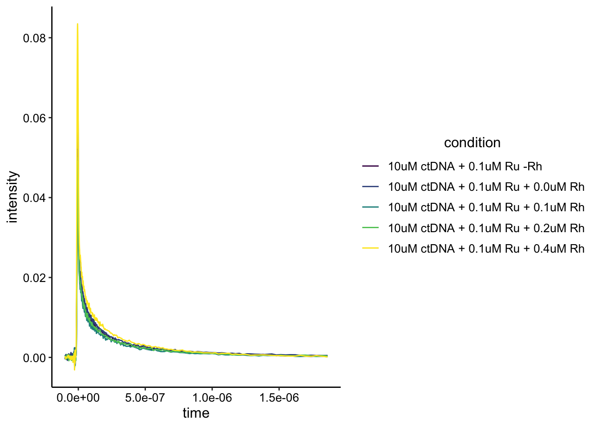
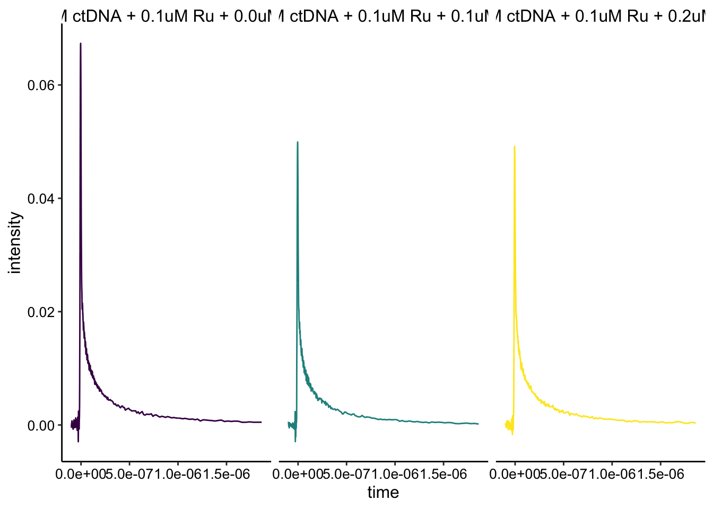
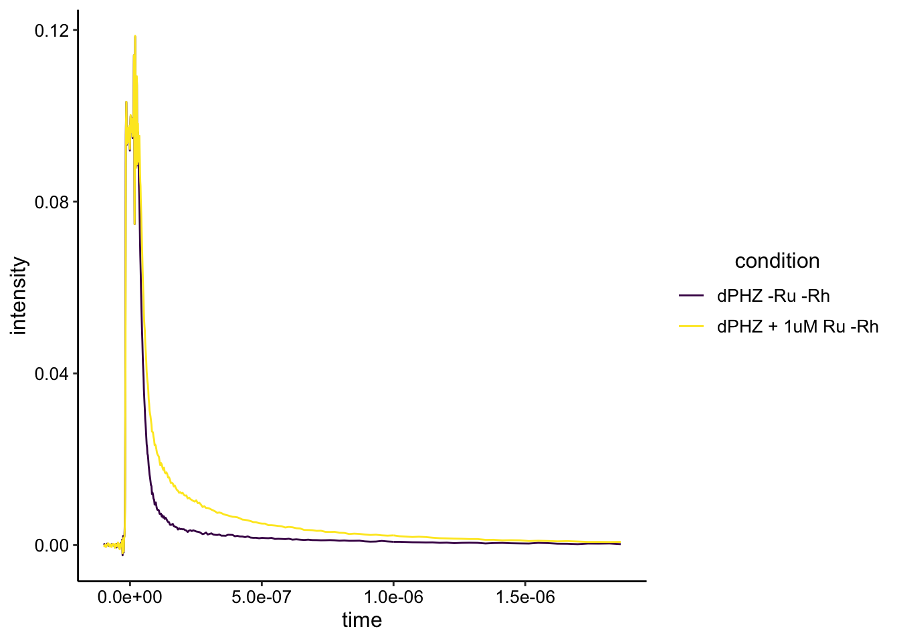
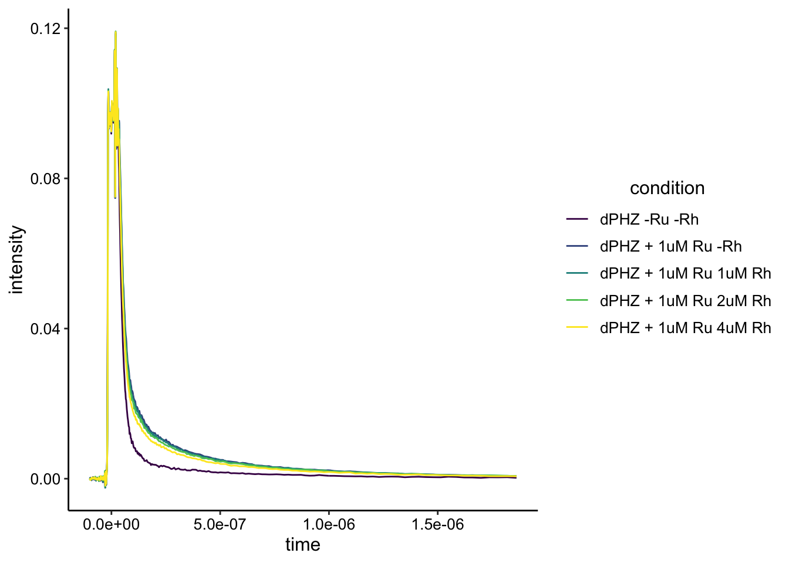
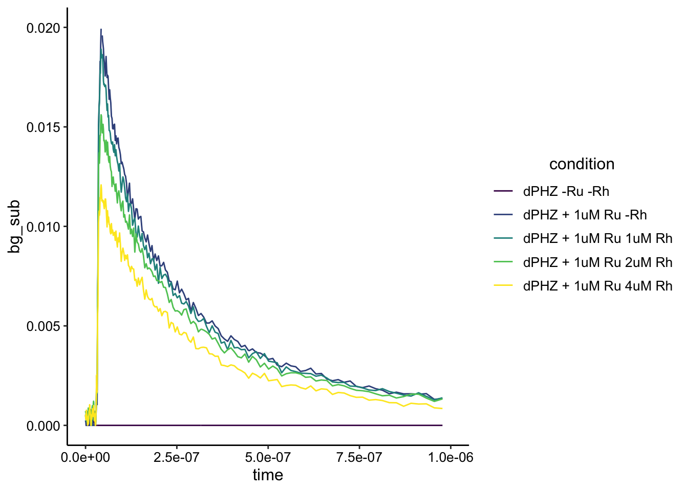
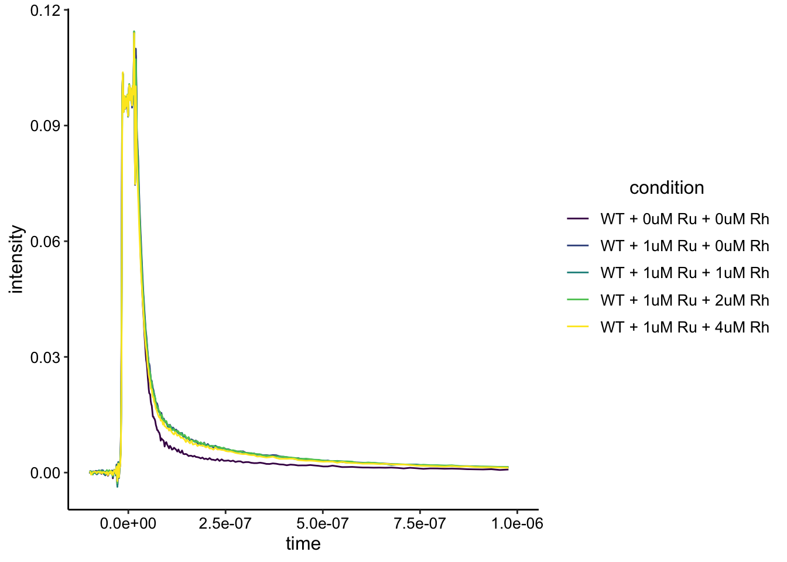
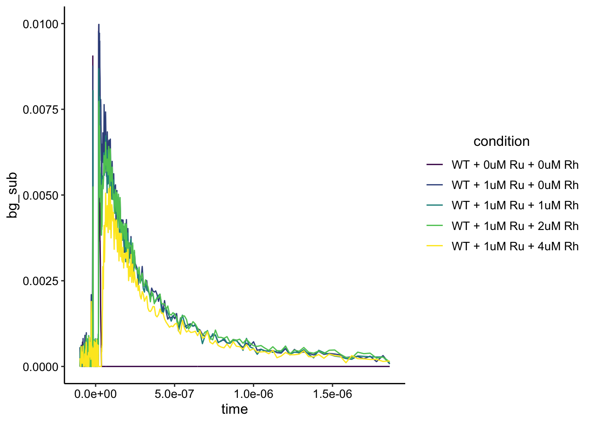
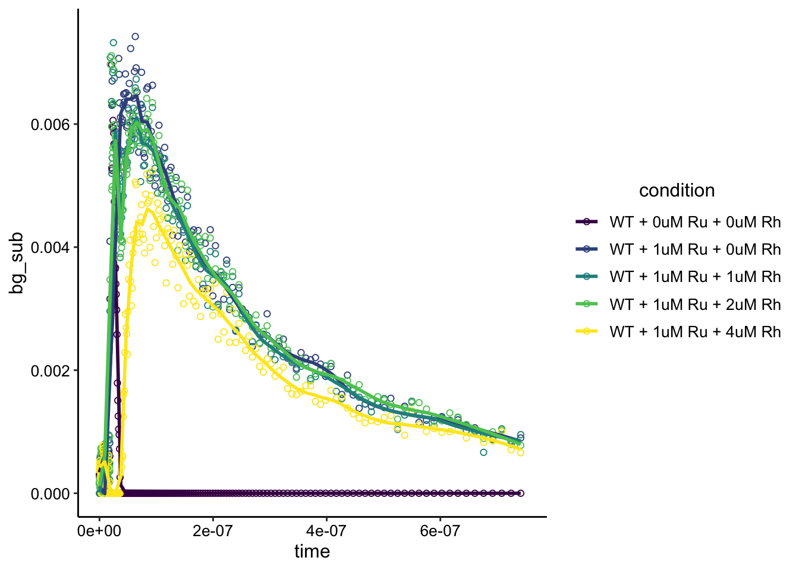
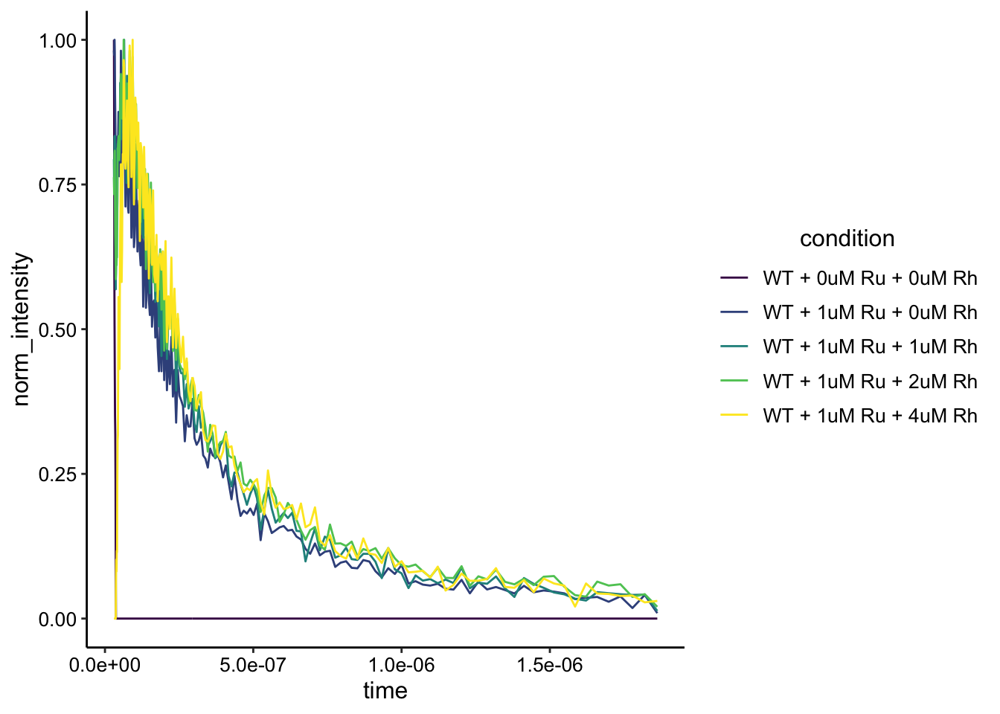

DNA CT Spectroscopy with Biofilm Suspension
Ru quenched by Rh
08_07_19
library(tidyverse)
library(cowplot)
library(viridis)
library(knitr)
library(kableExtra)
knitr::opts_chunk$set(tidy.opts=list(width.cutoff=60),tidy=TRUE, echo = TRUE, message=FALSE, warning=FALSE, fig.align="center")
source("../../../IDA/tools/plotting_tools.R")
theme_set(theme_1())Intro
These experiments were performed by Eric Stemp, a former Barton Lab postdoc, and long time collaborator. I prepared the biofilms and helped pipette a few things.
The goal of these experiments was to assess whether or not biofilm eDNA was capable of supporting DNA CT between two known redox intercalators. My understanding of the way this works is that \(Ru(phen)_2dppz^{2+}\) is photoexcited by a laser, and this photoexcited state is luminescent / fluorescent so we follow this species over time. The photoexcited state can return to ground state slowly on its own or it can be quenched on different timescales by a few different processes.
The two main modes of quenching we are looking for are “dynamic quenching” and “static quenching.” I think that these terms are actually rather arbitrary, because I believe the difference is determined by the time resolution of the spectroscopy. Anyway, static quenching is a process that happens faster than the time resolution of the instrument, so it appears as just a decrease in intensity with the same lifetime. Dynamic quenching occurs on the measured timescale and appears as similiar initial intensity but different shaped decays implying different lifetimes.
The mechanisms of these two processes can be complicated, but for our purposes we consider static quenching to occur between the donor and quencher extremely fast, so that they are essentially behaving as one entity…the excited donor intermediate is not really there and the electron is immediately transferred to the quencher. Dynamic quenching can occur between a donor and quencher diffusing in solution, where the two molecules actually have to bump into each other to achieve quenching…and this is slow enough to observe.
To make a long story short, for DNA CT the Barton lab has established that we should see static quenching as the ET between the donor and quencher happens on such a fast time scale. For this experiment we are building off a body of past work and using \(Rh(phi)_2bpy^{3+}\) as the quencher / electron acceptor. See this paper for an example of the past work. The plots that we are sort of trying to replicate from this paper are shown below: The left is static quenching via DNA CT and the right is dynamic quenching in SDS micelles.
knitr::include_graphics("./static_dynamic_quenching_fig.jpg")
For this experiment I prepared WT and \(\Delta phz*\) biofilms, thinking that I could resuspend them (as for LC-MS measurements) and use that suspension in a cuvette with the metal complexes. I recently estimated the dsDNA in a WT biofilm to be ~100uM. I don’t know what it is in the \(\Delta phz*\) biofilms, but since we diluted ~10x it’s safe to think we are in the 10uM range of DNA concentration.
Methods
I grew WT and \(\Delta phz*\) biofilms as normal for 3 days at room temp. Just before the measurements (~1 hr before) I resuspended a \(\Delta phz*\) biofilm in 500uL of PBS NaCl 137mM. Later I came back and resuspended the WT biofilm in the same way, just before the measurements.
Eric brought the stocks of ctDNA, \(Ru(phen)_2dppz^{2+}\), \(Rh(phi)_2bpy^{3+}\), and we performed all of the experiments in my PBS 137.
First we did in vitro experiments with ctDNA (10uM) and 1uM Ru, then we tried 10uM ctDNA with 0.1uM Ru. My understanding is that 1:100 is the optimal stoichiometry…but we weren’t sure we would be able to observe that low Ru concentration.
We did have some issues collecting the 0.1uM Ru scans, so we decided to use 1uM Ru with the biofilms. We acquired biofilm only background scans and then added 1uM Ru, followed by 1, 2, and 4uM Rh (final concentrations). We gently shook the cuvette before measuring each time. Scans were taken pretty quickly after mixing, and the total titrations only took ~10min, so hopefully the cells were not affected.
Eric set up the laser, so I’m sure he has more details. His notes on samples and laser settings are saved as a pdf in the data directory. Also, each scan setting is saved as a header in the data files. Briefly, the Ru was excited at 532nm and emission was recorded at 620nm (or greater than 600nm?). The laser pulses were 2 mJ / pulse. The biofilm data was acquired with 9 cycles (consecutive acquisitions to improve signal to noise), with 100 shots per cycle.
The data was then converted from the ns1 format to a text .dat file with Jay Winkler’s help (a matlab script). In this notebook I am using the log compressed data files, because the raw data points are taken at a very high time resolution. This filtering keeps most datapoints at short time scales, but thins at long time scales. Seems totally fine, but we also have the raw datafiles.
Results
Now let’s look at the data that Eric acquired. We’ll start with the in vitro conditions, and then look at the \(\Delta phz*\) and WT biofilm data.
Calf Thymus DNA (in vitro)
First we did some in vitro controls with calf-thymus DNA and the Ru / Rh complexes. We wanted to know how the data might look with the concentration of dsDNA we expected in the biofilm suspensions (~10uM).
Let’s read in the data for 10uM ctDNA bp + 1uM and the stepwise Rh additions. I’m attaching the conditions to the data based on Eric’s notes (see pdf).
df_3 <- read_csv("../data/80719_3_compressed.dat", skip = 16,
col_names = c("time", "intensity")) %>% mutate(condition = "10uM ctDNA + 1uM Ru -Rh")
df_4 <- read_csv("../data//80719_4_compressed.dat", skip = 16,
col_names = c("time", "intensity")) %>% mutate(condition = "10uM ctDNA + 1uM Ru + 0uM Rh")
df_5 <- read_csv("../data/80719_5_compressed.dat", skip = 16,
col_names = c("time", "intensity")) %>% mutate(condition = "10uM ctDNA + 1uM Ru + 1uM Rh")
df_6 <- read_csv("../data/80719_6_compressed.dat", skip = 16,
col_names = c("time", "intensity")) %>% mutate(condition = "10uM ctDNA + 1uM Ru + 2uM Rh")
df_7 <- read_csv("../data/80719_7_compressed.dat", skip = 16,
col_names = c("time", "intensity")) %>% mutate(condition = "10uM ctDNA + 1uM Ru + 4uM Rh")
df_ctDNA <- bind_rows(df_4, df_5, df_6, df_7)
df_ctDNA %>% head() %>% kable(digits = 15) %>% kable_styling()| time | intensity | condition |
|---|---|---|
| -9.939e-08 | -6.27461e-04 | 10uM ctDNA + 1uM Ru + 0uM Rh |
| -9.779e-08 | 1.83761e-04 | 10uM ctDNA + 1uM Ru + 0uM Rh |
| -9.559e-08 | -1.59634e-04 | 10uM ctDNA + 1uM Ru + 0uM Rh |
| -9.339e-08 | 3.83416e-05 | 10uM ctDNA + 1uM Ru + 0uM Rh |
| -9.119e-08 | -4.81367e-04 | 10uM ctDNA + 1uM Ru + 0uM Rh |
| -8.909e-08 | 5.33984e-05 | 10uM ctDNA + 1uM Ru + 0uM Rh |
You can see that the text files are two columns with time and intensity. I added the condition column. Also note that the acquisition parameters are in the header of each file (hence the “skip = 16” lines).
Let’s see what the data look like:
ggplot(df_ctDNA, aes(x = time, y = intensity, color = condition)) +
geom_path() + scale_color_viridis_d()
Ok, it looks like one of the traces is obviously different from the others. Let’s zoom in.
ggplot(df_ctDNA, aes(x = time, y = intensity, color = condition)) +
geom_path() + xlim(NA, 1e-06) + ylim(NA, 0.02) + scale_color_viridis_d()
The one trace that is different from the others is the no Rh condition. However, it isn’t clear that there’s static quenching going on here. It may be useful to acquire an instrument response background scan with just buffer, so that we can background subtract these curves. It also looks like the curves may be saturated, so there may be an effect that’s just hard to see. Either way, the Rh gives an effect, but it does not increase in a stepwise manner. Not sure what to make of that.
One potential issue that Eric brought up was the stoichiometry of Ru/Rh to DNA bp. Not sure if that would explain the patterns, but let’s move forward to look at a lower stoichiometry with 10uM ctDNA and 0.1uM Ru.
First I’ll read in the data in the same way.
df_14 <- read_csv("../data/80719_14_compressed.dat", skip = 16,
col_names = c("time", "intensity")) %>% mutate(condition = "10uM ctDNA + 0.1uM Ru -Rh")
df_15 <- read_csv("../data//80719_15_compressed.dat", skip = 16,
col_names = c("time", "intensity")) %>% mutate(condition = "10uM ctDNA + 0.1uM Ru + 0.0uM Rh")
df_16 <- read_csv("../data/80719_16_compressed.dat", skip = 16,
col_names = c("time", "intensity")) %>% mutate(condition = "10uM ctDNA + 0.1uM Ru + 0.1uM Rh")
df_17 <- read_csv("../data/80719_17_compressed.dat", skip = 16,
col_names = c("time", "intensity")) %>% mutate(condition = "10uM ctDNA + 0.1uM Ru + 0.2uM Rh")
df_18 <- read_csv("../data/80719_18_compressed.dat", skip = 16,
col_names = c("time", "intensity")) %>% mutate(condition = "10uM ctDNA + 0.1uM Ru + 0.4uM Rh")
df_ctDNA_lowRu <- bind_rows(df_14, df_15, df_16, df_17, df_18)
df_ctDNA_lowRu %>% head() %>% kable(digits = 15) %>% kable_styling()| time | intensity | condition |
|---|---|---|
| -9.939e-08 | -5.58203e-05 | 10uM ctDNA + 0.1uM Ru -Rh |
| -9.779e-08 | 1.16410e-04 | 10uM ctDNA + 0.1uM Ru -Rh |
| -9.559e-08 | -2.25210e-04 | 10uM ctDNA + 0.1uM Ru -Rh |
| -9.339e-08 | -9.55930e-05 | 10uM ctDNA + 0.1uM Ru -Rh |
| -9.119e-08 | 1.20316e-04 | 10uM ctDNA + 0.1uM Ru -Rh |
| -8.909e-08 | 3.74648e-04 | 10uM ctDNA + 0.1uM Ru -Rh |
The data structure is the same as before. Let’s look at it plotted:
ggplot(df_ctDNA_lowRu, aes(x = time, y = intensity, color = condition)) +
geom_path() + scale_color_viridis_d()
Ok, this looks a little weird. The one curve that looks like the highest intensity should have the most Rh quencher. Perhaps I added the wrong molecule (Ru and Rh look very similar…) or the scan was weird. That said part of the dataset makes sense if we just look at the 0uM - 0.2uM Rh conditions:
df_ctDNA_lowRu_2 <- bind_rows(df_15, df_16, df_17)
ggplot(df_ctDNA_lowRu_2, aes(x = time, y = intensity, color = condition)) +
geom_path() + scale_color_viridis_d() + facet_wrap(~condition) +
guides(color = "none")
Here you can see that the Ru only sample is quenched by the addition of the Rh. That said, it’s not a nice obvious stepwise thing. Eric mentioned that could also be because we are getting to concentrations that are probably below the Kd for Rh complex binding DNA…making it a much weaker quencher. In general though, it would be nice to background subtract out the instrument response to make sure that we are really only looking at the Ru emission…
\(\Delta phz*\) Biofilm
Now for the real deal. Here we basically just repeated the 1uM Ru experiment from above, but this time with my biofilm suspension added directly to the cuvette (instead of ctDNA).
Let’s read in the data:
df_19 <- read_csv("../data/80719_19_compressed.dat", skip = 16,
col_names = c("time", "intensity")) %>% mutate(condition = "dPHZ -Ru -Rh")
df_20 <- read_csv("../data//80719_20_compressed.dat", skip = 16,
col_names = c("time", "intensity")) %>% mutate(condition = "dPHZ + 1uM Ru -Rh")
df_21 <- read_csv("../data/80719_21_compressed.dat", skip = 16,
col_names = c("time", "intensity")) %>% mutate(condition = "dPHZ + 1uM Ru 1uM Rh")
df_22 <- read_csv("../data/80719_22_compressed.dat", skip = 16,
col_names = c("time", "intensity")) %>% mutate(condition = "dPHZ + 1uM Ru 2uM Rh")
df_23 <- read_csv("../data/80719_23_compressed.dat", skip = 16,
col_names = c("time", "intensity")) %>% mutate(condition = "dPHZ + 1uM Ru 4uM Rh")
df_dphz <- bind_rows(df_19, df_20, df_21, df_22, df_23)
df_dphz %>% head() %>% kable(digits = 15) %>% kable_styling()| time | intensity | condition |
|---|---|---|
| -9.939e-08 | 3.97908e-04 | dPHZ -Ru -Rh |
| -9.779e-08 | 2.58198e-04 | dPHZ -Ru -Rh |
| -9.559e-08 | -1.65492e-04 | dPHZ -Ru -Rh |
| -9.339e-08 | -2.84336e-04 | dPHZ -Ru -Rh |
| -9.119e-08 | -2.03292e-04 | dPHZ -Ru -Rh |
| -8.909e-08 | -8.58594e-05 | dPHZ -Ru -Rh |
First let’s just look at the biofilm only scan compared to biofilm + 1uM Ru.
df_dphz %>% filter(condition %in% c("dPHZ -Ru -Rh", "dPHZ + 1uM Ru -Rh")) %>%
ggplot(data = ., aes(x = time, y = intensity, color = condition)) +
geom_path() + scale_color_viridis_d()
Here we can see two things. First, the biofilm by itself has significant fluorescence emission with these settings with a lifetime that happens on this timescale. Second, the Ru fluorescence / lifetime is actually visible above that background. So let’s look at the whole dataset:
ggplot(df_dphz, aes(x = time, y = intensity, color = condition)) +
geom_path() + scale_color_viridis_d()
# ggplot(df_dphz, aes(x = time, y = intensity, color =
# condition)) + geom_path() + xlim(NA, 1e-6)+ylim(NA,0.04) +
# scale_color_viridis_d()Ok, it sort of look like something is happening there with the addition of the Rh. Let’s subtract the background of the biofilm only fluorescence and see how that looks. To do this we are just going to subtract the minimum value at each datapoint (which will be the biofilm only condition).
This may actually be static quenching
df_dphz_bg <- df_dphz %>%
group_by(time) %>%
mutate(min = min(intensity)) %>%
mutate(bg_sub = intensity - min)
ggplot(df_dphz_bg, aes(x = time, y = bg_sub, color = condition)) + geom_path() + #xlim(NA, 1e-6)+ylim(NA,0.04) +
scale_color_viridis_d() Woah!!
Woah!!
First, it looks like our background subtraction worked well. The biofilm only condition now pretty much looks like a flat line at zero. Second the real crazy thing is it looks like static quenching as we add more Rh. Let’s zoom in a little more to make it nice and pretty:
ggplot(df_dphz_bg, aes(x = time, y = bg_sub, color = condition)) +
geom_path() + xlim(0, 1e-06) + ylim(NA, 0.02) + scale_color_viridis_d()
Nice! Now the last thing we should check is if the shapes of the curves are actually different or not. Remember different shape means different lifetime means dynamic quenching. Same shape (different intensity) means static quenching.
To do this, I’m just going to normalize by the max intensity within each condition (from the background subtracted intensities).
df_dphz_bg_norm <- df_dphz_bg %>%
filter(time>0) %>%
group_by(condition) %>%
mutate(max = max(bg_sub)) %>%
mutate(norm_intensity = bg_sub / max)
ggplot(df_dphz_bg_norm, aes(x = time, y = norm_intensity, color = condition)) + geom_path() + #xlim(NA, 1e-6)+ylim(NA,0.04) +
scale_color_viridis_d()
Looks like the exact same shape to me! This is really interesting and I think it’s pretty good evidence of static quenching in the biofilm suspension. See the end of the document for caveats and next steps.
WT Biofilm
We had a little time leftover, so we decided to try a different condition - a WT biofilm. I reasoned that this biofilm may have more eDNA than the dPHZ…but it could also be more complicated if any of the phenazines quench the Ru fluorescence (instead of the Rh quenching).
Let’s read in the data:
df_25 <- read_csv("../data/80719_25_compressed.dat", skip = 16,
col_names = c("time", "intensity")) %>% mutate(condition = "WT + 0uM Ru + 0uM Rh")
df_26 <- read_csv("../data/80719_26_compressed.dat", skip = 16,
col_names = c("time", "intensity")) %>% mutate(condition = "WT + 1uM Ru + 0uM Rh")
df_27 <- read_csv("../data/80719_27_compressed.dat", skip = 16,
col_names = c("time", "intensity")) %>% mutate(condition = "WT + 1uM Ru + 1uM Rh")
df_28 <- read_csv("../data/80719_28_compressed.dat", skip = 16,
col_names = c("time", "intensity")) %>% mutate(condition = "WT + 1uM Ru + 2uM Rh")
df_29 <- read_csv("../data/80719_29_compressed.dat", skip = 16,
col_names = c("time", "intensity")) %>% mutate(condition = "WT + 1uM Ru + 4uM Rh")
df_wt <- bind_rows(df_25, df_26, df_27, df_28, df_29)
df_wt %>% head() %>% kable(digits = 15) %>% kable_styling()| time | intensity | condition |
|---|---|---|
| -9.939e-08 | -2.25339e-04 | WT + 0uM Ru + 0uM Rh |
| -9.779e-08 | 1.52250e-04 | WT + 0uM Ru + 0uM Rh |
| -9.559e-08 | -1.20494e-05 | WT + 0uM Ru + 0uM Rh |
| -9.339e-08 | -2.24802e-04 | WT + 0uM Ru + 0uM Rh |
| -9.119e-08 | -1.02643e-04 | WT + 0uM Ru + 0uM Rh |
| -8.909e-08 | -1.59453e-04 | WT + 0uM Ru + 0uM Rh |
Let’s look at all the data together:
ggplot(df_wt, aes(x = time, y = intensity, color = condition)) + geom_path() + xlim(NA, 1e-6)+ #ylim(NA,NA) +
scale_color_viridis_d()
As for dPHZ, it is clear that the biofilm has a background fluorescence, but it’s also clear that we can see the Ru signal above that background. It’s not obvious if we are seeing any difference with the Rh added.
Let’s go ahead and background subtract out the biofilm only signal in the same was as above (since that was very useful).
df_wt_bg <- df_wt %>% group_by(time) %>% mutate(min = min(intensity)) %>%
mutate(bg_sub = intensity - min)
ggplot(df_wt_bg, aes(x = time, y = bg_sub, color = condition)) +
geom_path() + ylim(NA, 0.01) + scale_color_viridis_d()
Ok, the background subtraction seems to have worked well (biofilm is flat line). The Ru signal looks a little noisier than the dPHZ (it’s less than half the intensity), and that may be due to some effect of the phenazine? More importantly, it looks like there is an effect from adding the Rh here as well. Let’s zoom in a little more and smooth to see a prettier view:
ggplot(df_wt_bg, aes(x = time, y = bg_sub, color = condition)) +
geom_point(shape = 21) + geom_smooth(span = 0.1, se = F) +
ylim(NA, 0.0075) + xlim(0, 7.5e-07) + scale_color_viridis_d()
It’s still noisy, but it looks like the peaks for the 1 and 2uM Rh are lower than the 0uM Rh. The obvious decrease comes with the 4uM Rh. Surely we could get nicer fits by actual fitting a relevant model here…but that seems overkill for now.
The only other question for the WT data is - are the peaks the same shape? Let’s normalize as before and plot:
df_wt_bg_norm <- df_wt_bg %>%
filter(time>3e-8) %>%
group_by(condition) %>%
mutate(max = max(bg_sub)) %>%
mutate(norm_intensity = bg_sub / max)
ggplot(df_wt_bg_norm, aes(x = time, y = norm_intensity, color = condition)) + geom_path() + #xlim(NA, 1e-6)+ylim(NA,0.04) +
scale_color_viridis_d()
When we normalize by the max in this time interval to focus on the peaks and not the noise beforehand we get this plot. This looks pretty good…for now I think it’s reasonable to think that these are the same shape and represent the same lifetime.
Conclusions and Next Steps
I take this experiment to be reasonable preliminary data that static quenching does occur between our \(Ru(phen)_2dppz^{2+}\) and \(Rh(phi)_2bpy^{3+}\) complexes in DNA associated with the biofilms. Based on Jackie’s work it is reasonable to speculate that the static quenching is occuring through DNA CT.
One caveat that I think we may want to address if this type of data actually goes in the paper - is the DNA mediating the effect extracellular DNA that existed in the biofilm, or is it genomic DNA from live or recently killed cells. In order to know this we would like to know how much the complexes are getting into live cells and how fast (if at all) the complexes might kill the biofilm cells.
Broadly, this biofilm suspension isn’t really a biofilm anymore, and so that is a caveat because we’ve taken away all the structure. If we ever had a way to perform these measurements in situ (e.g. time resolved fluorescence microscopy) that would be very cool.
The final data analysis caveat - by background subtracting we are assuming that the biofilm autofluorescence isn’t interacting at all with the Ru emission…and I don’t think we can know that for sure.
If we want to continue a few more experiments down this path I think that we should acquire some replicate biofilm measurements with WT and dPHZ as well as exponentially growing cells. We should try to image the Ru fluorescence in the biofilm suspension and measure eDNA concentration via TOTO-1 fluorescence. We should also do some toxicity tests incubating the biofilm suspensions with the metal complexes for different amounts of time and performing CFUs. The other interesting avenue to pursue is whether PYO can actually quench \(Ru(phen)_2dppz^{2+}\). Eric seemed to have tried a few things with this and it didn’t sound straightforward…but who knows. A possible in vivo experiment to try would be to look at a \(\Delta phz*\) biofilm + / - PYO (in the agar) as a potential quencher.